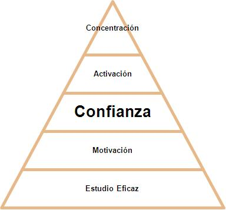

De principio a fin lo que ha sido la historia de la danza se ha visto dentro de los métodos tradicionales para la preparación de un bailarín, pero a lo largo de este tiempo los profesores se han percatado de que estos métodos no siempre dejan lo mejor preparado al alumno de danza. Por eso, es importante ver los avances que se ha tenido en la ciencia del deporte y la psicología para así poder tener una información más entendible, aplicando la psicología en la enseñanza de la danza y poder otorgarles un mejor rendimiento a los estudiantes de ésta disciplina, al igual de que nos dará un mejor panorama para la preparación mental que conlleva la danza.
Pirámide de la actitud escénica
Esta es la cual los bailarines experimentan durante su actuación, conduciéndolos a una actitud escénica, originada por los cambios realizados por el bailarín para poder rendir al máximo. En la base se encuentra la motivación, posteriormente la confianza en uno mismo, consecuentemente la intensidad y por último la concentración.
